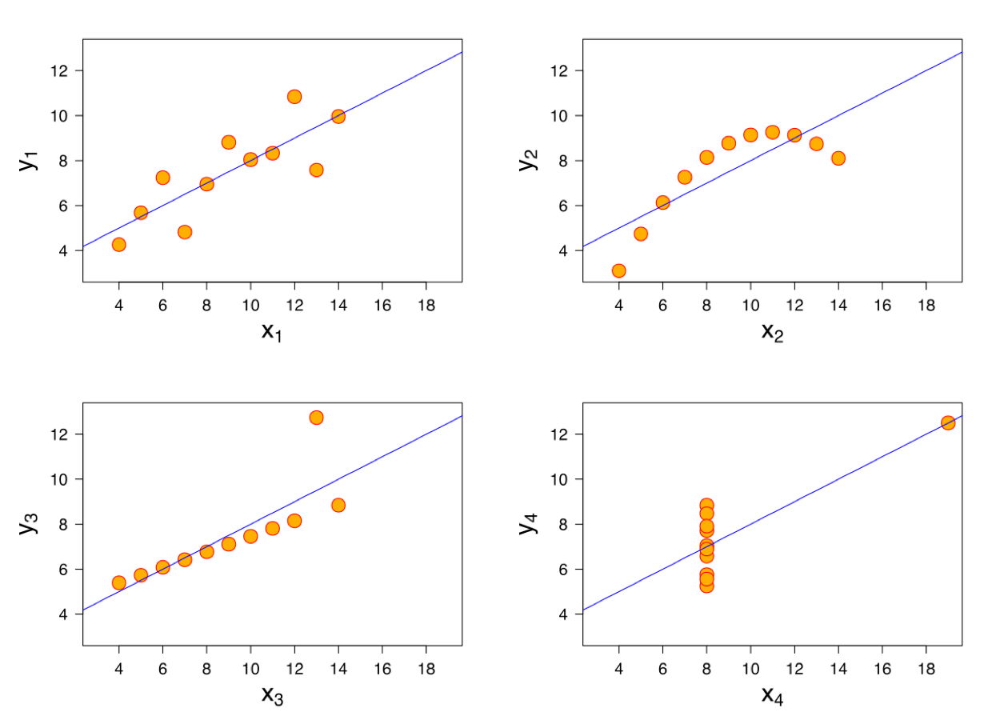
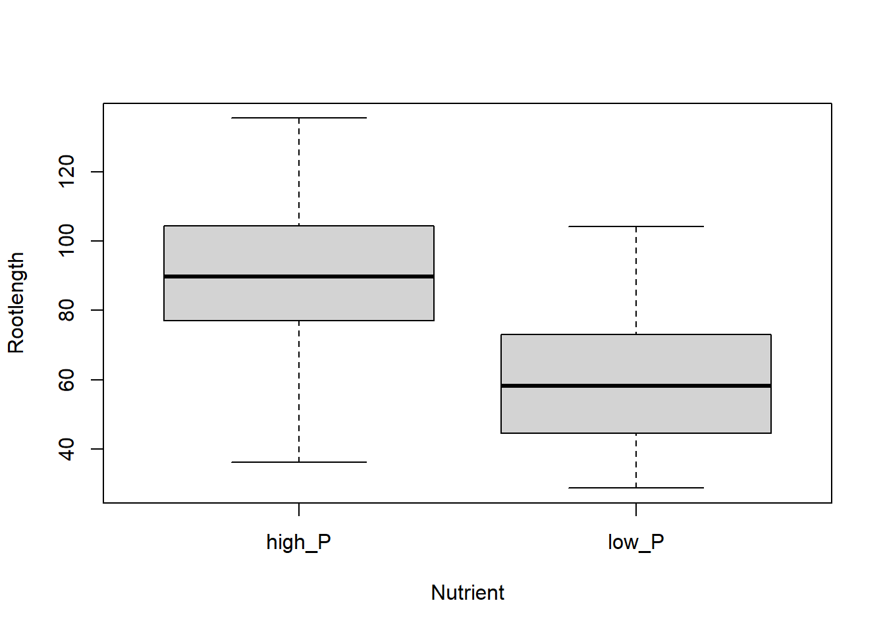
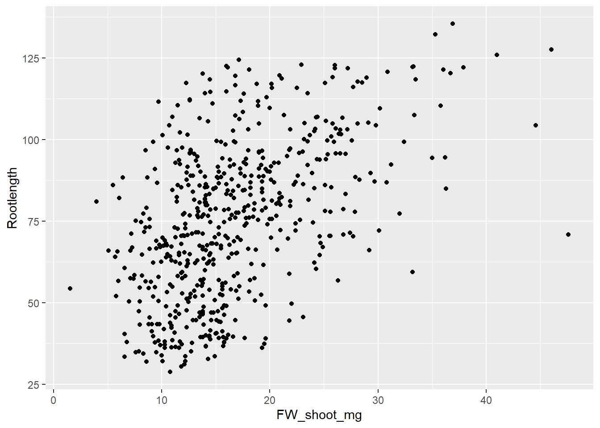
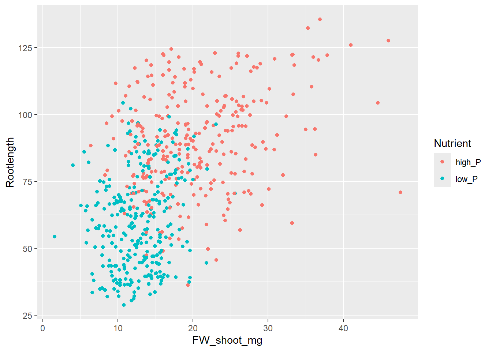
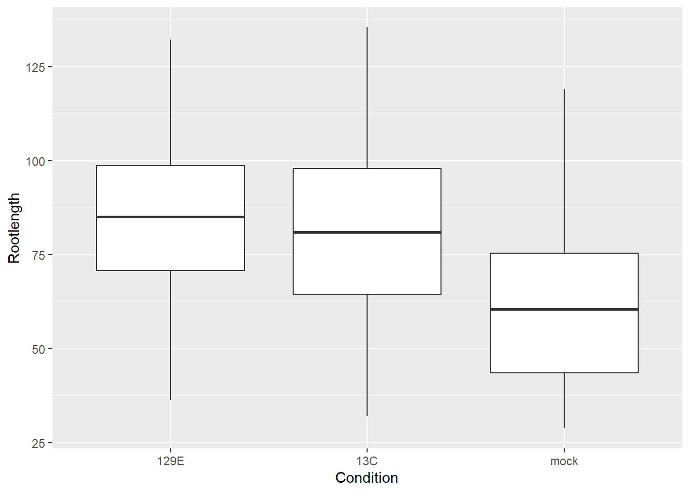
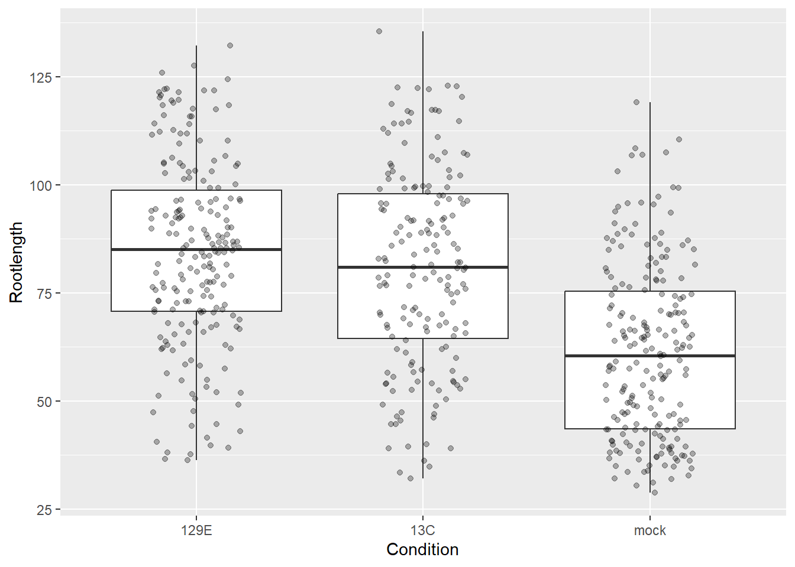
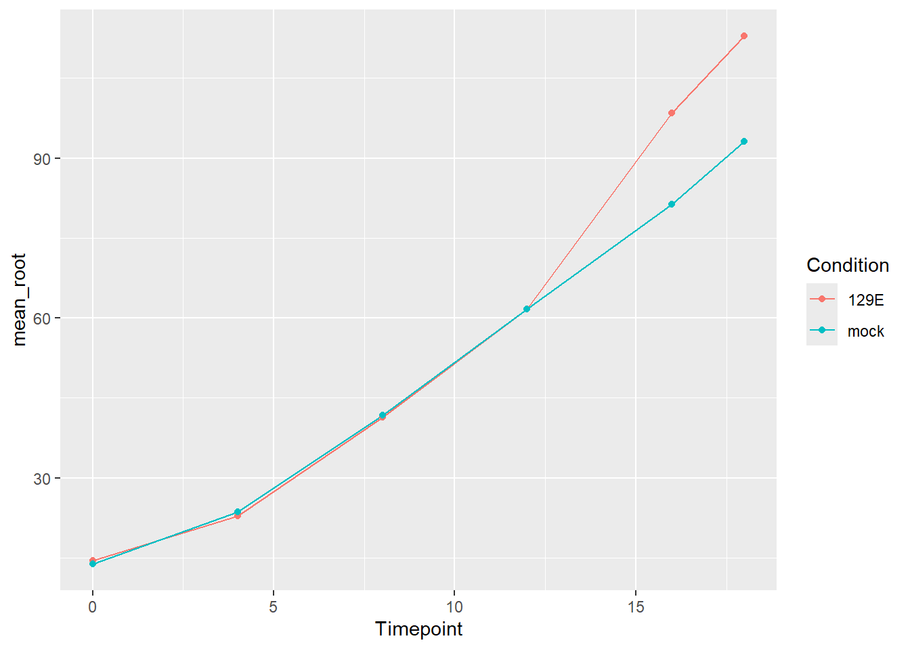
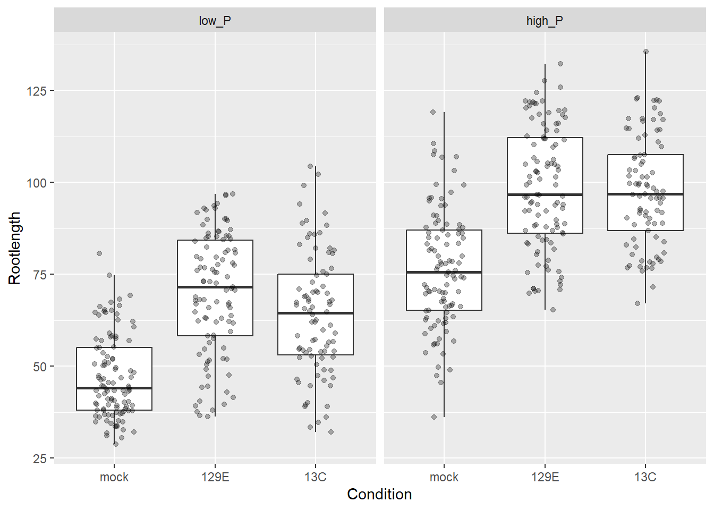
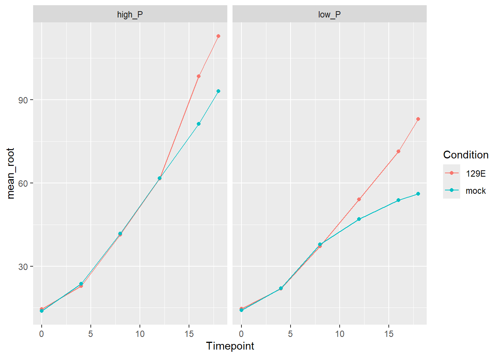
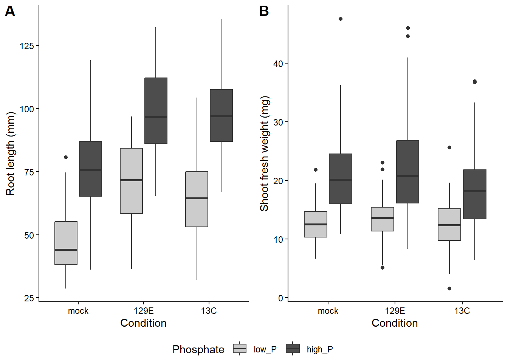

# load the tidyverse
library(tidyverse)
# read in the data
growth_data <- read_tsv("data/Growth_Data.txt", show_col_types = FALSE)
timecourse <- read_tsv("data/Timecourse.txt", show_col_types = FALSE)7 Plotting your data
In this chapter you learn how to plot your data. We start with a few quick plots in base R, and then spend most of the chapter on ggplot2, the plotting package of the tidyverse.
As always, load the tidyverse and read the data first. This time we need both the growth data and the timecourse data:
7.1 Why plot your data?
Plots are not only for papers and presentations. They are one of the best ways to check your data before you run any statistics. Summary numbers can hide a lot. Figure 7.1 shows a famous example: four small data sets with almost the same mean, variance and regression line, but with very different patterns. Only the first one is described well by a straight line. Without plotting, you would never notice.

So make it a habit to plot your data first, and look at it.
7.2 Quick plots in base R
Base R has its own plotting functions. They are not as flexible as ggplot2, but for a quick look at your data they are often faster to type. You will also see them a lot in other people’s code, and we use some of them in the statistics chapter.
plot() draws a scatter plot. Like lm() and t.test(), it takes a formula: y ~ x, read as “y depends on x”, and the data frame with data:
# root length against shoot weight
plot(Rootlength ~ FW_shoot_mg, data = growth_data)
Plants with a missing root length or shoot weight are simply left out.
hist() draws a histogram. It takes a single column, which we get with $:
# distribution of the root length
hist(growth_data$Rootlength)
boxplot() draws a boxplot per group:
# root length per nutrient level
boxplot(Rootlength ~ Nutrient, data = growth_data)
A boxplot summarizes the values of each group:
- the thick line in the box is the median: half of the values are above it, half below
- the box goes from the first to the third quartile, so it holds the middle 50% of the values
- the whiskers (the thin lines) go to the most extreme values that are no further than 1.5 times the height of the box away from the box
- values further away are drawn as single points. They are often called outliers, but that does not mean that they are wrong
All three functions take arguments for labels, for example xlab, ylab and main (the title):
boxplot(Rootlength ~ Nutrient, data = growth_data,
xlab = "Phosphate level", ylab = "Root length (mm)", main = "Root length")
For quick checks, this is all you need. For plots with colors, groups and several panels, base R code quickly gets long and hard to read. This is where ggplot2 is much easier.
7.3 Your first ggplot
Every ggplot is built from the same parts:
ggplot()starts the plot. You give it the data frame, and inaes()(short for aesthetics) you say which column goes on which axis.- A geom says how to draw the data, for example as points (
geom_point()), boxes (geom_boxplot()) or lines (geom_line()). - The parts are added to each other with
+. Each part is a layer of the plot.
Let’s make the same scatter plot as above:
ggplot(growth_data, aes(x = FW_shoot_mg, y = Rootlength)) +
geom_point()Warning: Removed 23 rows containing missing values or values outside the scale range
(`geom_point()`).
Notice the warning that starts with “Removed 23 rows containing missing values”. ggplot2 leaves out the plants with a missing root length (15) or a missing shoot weight (8), just like base R. But unlike base R, it tells you about it. This is not an error: the plot is still made. Now that we know what the warning means, we hide it in the rest of this chapter with #| warning: false at the top of the chunks.
Always put the + at the end of a line, not at the start of the next one. Otherwise R thinks the plot is finished after the first line.
7.3.1 Exercise
Plot the root length (y-axis) against the condition (x-axis). What is different from the plot above?
TipSolution
ggplot(growth_data, aes(x = Condition, y = Rootlength)) +
geom_point()
Because Condition is text and not a number, ggplot2 makes one column of points per condition. Many points lie on top of each other, so it is hard to see how many plants there are. We fix this later with boxplots and geom_jitter().
7.4 Store and save your plots
You can store a plot in an object, like any other result in R. To see the plot, type the name of the object:
root_shoot_plot <- ggplot(growth_data, aes(x = FW_shoot_mg, y = Rootlength)) +
geom_point()
root_shoot_plot
ggsave() saves a plot to a file. The file type comes from the file name, for example .pdf, .png or .svg. With width, height and units you set the size:
ggsave("output_examples/Plot_root_length.pdf", plot = root_shoot_plot,
width = 12, height = 10, units = "cm")For figures in a paper or a poster, save your plots as vector files, such as pdf or svg. A vector file stores lines and points as shapes, so you can zoom in without losing quality, and you can still change details in programs like Inkscape or Illustrator. Raster files, such as png or jpg, store pixels. They are fine for slides and websites.
You can also save the plot that you see in the Plots pane with the Export button above the plot.
7.5 Aesthetics: colors, shapes and more
So far, we put columns on the x- and y-axis. In aes(), you can also link columns to other properties of the plot, for example:
color: the color of points and linesfill: the color inside boxes and barsshape: the shape of pointslinetype: solid, dashed or dotted lines
Let’s color the points by nutrient level:
ggplot(growth_data, aes(x = FW_shoot_mg, y = Rootlength, color = Nutrient)) +
geom_point()
ggplot2 picks the colors and adds a legend for us.
There is an important difference between setting a property inside and outside aes():
- Inside
aes(), you link the property to a column: each nutrient level gets its own color. - Outside
aes(), in the geom, you give a fixed value for all points.
For example, to make all points blue and a bit transparent (with alpha, from 0 for invisible to 1 for solid):
ggplot(growth_data, aes(x = FW_shoot_mg, y = Rootlength)) +
geom_point(color = "blue", alpha = 0.4)
7.5.1 Exercise
Make the scatter plot again. Color the points by condition, and give each nutrient level its own shape.
TipSolution
ggplot(growth_data, aes(x = FW_shoot_mg, y = Rootlength, color = Condition, shape = Nutrient)) +
geom_point()
7.6 Geoms: different types of plots
To change the type of plot, you change the geom. Here are the ones you will use most.
7.6.1 Boxplots
ggplot(growth_data, aes(x = Condition, y = Rootlength)) +
geom_boxplot()
A boxplot hides how many plants there are. You can show them by adding the points as a second layer. geom_jitter() draws the points with a bit of random sideways noise, so they don’t lie on top of each other. With width you set how far they spread:
ggplot(growth_data, aes(x = Condition, y = Rootlength)) +
geom_boxplot(outlier.shape = NA) +
geom_jitter(width = 0.2, alpha = 0.3)
outlier.shape = NA hides the outlier points of the boxplot. Otherwise these plants would be drawn twice: once by the boxplot and once by geom_jitter().
With fill, we get one box per nutrient level within each condition:
ggplot(growth_data, aes(x = Condition, y = Rootlength, fill = Nutrient)) +
geom_boxplot()
7.6.2 Histograms
A histogram only needs the x-axis. ggplot2 counts how many plants fall into each interval (bin). With binwidth you set the width of the bins, here 5 mm:
ggplot(growth_data, aes(x = Rootlength)) +
geom_histogram(binwidth = 5)
To compare the nutrient levels, we fill the bars by nutrient. position = "identity" draws the two histograms on top of each other instead of stacking them, and alpha makes them transparent, so we can see both:
ggplot(growth_data, aes(x = Rootlength, fill = Nutrient)) +
geom_histogram(binwidth = 5, position = "identity", alpha = 0.5)
7.6.3 Line plots
Line plots are good for measurements over time, like our timecourse data. We don’t want a line through every single plant, but through the mean of each group at each time point. So we first summarize the data with group_by() and summarize(), as in the chapter “Working with the tidyverse”:
# mean root length per nutrient, condition and time point
timecourse_summary <- timecourse |>
group_by(Nutrient, Condition, Timepoint) |>
summarize(mean_root = mean(Rootlength)) |>
ungroup()`summarise()` has grouped output by 'Nutrient', 'Condition'. You can override
using the `.groups` argument.timecourse_summaryLet’s plot the plants grown with low phosphate. color = Condition gives us one line per condition, and we add the points on top of the lines:
timecourse_summary |>
filter(Nutrient == "low_P") |>
ggplot(aes(x = Timepoint, y = mean_root, color = Condition)) +
geom_line() +
geom_point()
Notice that we can give the result of a pipe straight to ggplot(). After ggplot(), the layers are joined with +, not with |>.
7.6.4 Trend lines
geom_smooth() adds a trend line to a scatter plot. With method = "lm" it draws the straight line of a linear model, which you will learn about in the statistics chapter. The grey band shows how uncertain the line is:
ggplot(growth_data, aes(x = FW_shoot_mg, y = Rootlength)) +
geom_point(alpha = 0.3) +
geom_smooth(method = "lm")
If you color by a column, you get one line per group:
ggplot(growth_data, aes(x = FW_shoot_mg, y = Rootlength, color = Nutrient)) +
geom_point(alpha = 0.3) +
geom_smooth(method = "lm")
7.6.5 Exercise
- Make a boxplot of the shoot weight per condition, with the plants shown as points.
- Make a line plot of the timecourse for the plants grown with high phosphate.
TipSolution
# 1. shoot weight per condition
ggplot(growth_data, aes(x = Condition, y = FW_shoot_mg)) +
geom_boxplot(outlier.shape = NA) +
geom_jitter(width = 0.2, alpha = 0.3)
# 2. timecourse with high phosphate
timecourse_summary |>
filter(Nutrient == "high_P") |>
ggplot(aes(x = Timepoint, y = mean_root, color = Condition)) +
geom_line() +
geom_point()
7.7 Bar graphs with error bars
In biology, you often see bar graphs that show the mean of each group with error bars. For this, we first make a table with the mean and the standard deviation of each group. The standard deviation (sd) describes how much the root length varies between the plants of a group: the larger it is, the more the plants differ from each other.
# mean and standard deviation of the root length per treatment
root_summary <- growth_data |>
group_by(Nutrient, Condition) |>
summarize(mean_root = mean(Rootlength, na.rm = TRUE),
sd_root = sd(Rootlength, na.rm = TRUE)) |>
ungroup()`summarise()` has grouped output by 'Nutrient'. You can override using the
`.groups` argument.root_summarygeom_col() draws bars with the height that is given in the data. geom_errorbar() draws the error bars, from ymin to ymax:
ggplot(root_summary, aes(x = Condition, y = mean_root, fill = Nutrient)) +
geom_col(position = position_dodge()) +
geom_errorbar(aes(ymin = mean_root - sd_root, ymax = mean_root + sd_root),
position = position_dodge(width = 0.9), width = 0.2)
position_dodge() puts the bars of the two nutrient levels next to each other instead of on top of each other. The error bars need the same dodge, so that they end up on top of the right bar.
ImportantWhat do the error bars show?
Error bars can show different things: the standard deviation, the standard error of the mean, or a confidence interval. These can differ a lot in size for the same data, so a reader can only interpret your error bars if you say which one you use. Always write it in the figure legend, for example “mean ± sd”. The statistics chapter shows how large the difference between sd and se can be.
A bar graph only shows the mean of each group and hides everything else. A boxplot with the points, as above, shows how the plants are spread and how many there are. Think about which plot tells your reader more.
7.8 Order of the groups
ggplot2 sorts text columns alphabetically. That is why 129E and 13C come before mock, and high_P before low_P. Often you want another order, for example with the control first.
Remember factors from the chapter “Data objects”? The order of the levels sets the order in the plot. With mutate() and factor(), we set the order ourselves:
growth_data <- growth_data |>
mutate(Condition = factor(Condition, levels = c("mock", "129E", "13C")),
Nutrient = factor(Nutrient, levels = c("low_P", "high_P")))Now the control comes first, and low phosphate before high phosphate:
ggplot(growth_data, aes(x = Condition, y = Rootlength, fill = Nutrient)) +
geom_boxplot()
7.9 Facets: one panel per group
Sometimes a plot gets clearer if you split it into several panels, one per group. This is called faceting. facet_wrap() makes one panel for each value of a column. The ~ reads as “by”:
ggplot(growth_data, aes(x = Condition, y = Rootlength)) +
geom_boxplot(outlier.shape = NA) +
geom_jitter(width = 0.2, alpha = 0.3) +
facet_wrap(~ Nutrient)
By default, all panels have the same axes, which makes it easy to compare them. With scales = "free_y", each panel gets its own y-axis. And with ncol or nrow you set how the panels are arranged.
7.9.1 Exercise
Plot the timecourse for both nutrient levels, with one panel per nutrient level.
TipSolution
ggplot(timecourse_summary, aes(x = Timepoint, y = mean_root, color = Condition)) +
geom_line() +
geom_point() +
facet_wrap(~ Nutrient)
7.10 Labels, colors and themes
The default plots are good for a first look. For a report or a paper, you usually want better labels, your own colors and a cleaner look.
labs()sets the axis titles, the legend title and a plot title.scale_fill_manual()sets your own colors forfill(andscale_color_manual()forcolor). You can name the colors, so that each group gets the right one.- A theme sets the overall look.
theme_classic()has no grey background and no grid lines. Other built-in themes are, for example,theme_bw()andtheme_minimal(). theme()changes single parts of the plot, for example where the legend goes.
root_plot <- ggplot(growth_data, aes(x = Condition, y = Rootlength, fill = Nutrient)) +
geom_boxplot() +
scale_fill_manual(values = c(low_P = "grey80", high_P = "grey30")) +
labs(x = "Condition", y = "Root length (mm)", fill = "Phosphate") +
theme_classic() +
theme(legend.position = "bottom")
root_plot
Colors can be given by name, like "grey80", or as a hex code, like "#2A6FDB". Choose colors that people with color blindness can tell apart, and that still work when printed in grey.
7.11 Combine several plots
For a figure with several panels, you can combine plots with ggarrange() from the ggpubr package. Install it once with install.packages("ggpubr") in the Console. We also use ggpubr in the statistics chapter.
Let’s make a second plot for the shoot weight, with the same look:
shoot_plot <- ggplot(growth_data, aes(x = Condition, y = FW_shoot_mg, fill = Nutrient)) +
geom_boxplot() +
scale_fill_manual(values = c(low_P = "grey80", high_P = "grey30")) +
labs(x = "Condition", y = "Shoot fresh weight (mg)", fill = "Phosphate") +
theme_classic() +
theme(legend.position = "bottom")ggarrange() takes the plots, labels for the panels, and the number of columns and rows. common.legend = TRUE shows the legend only once:
library(ggpubr)
combined_plot <- ggarrange(root_plot, shoot_plot,
labels = c("A", "B"),
ncol = 2, nrow = 1,
common.legend = TRUE, legend = "bottom")
combined_plot
You save it with ggsave(), as any other plot:
ggsave("output_examples/Two_plots.pdf", plot = combined_plot,
width = 18, height = 10, units = "cm")7.12 Summary
In this chapter you learned how to:
- make quick plots in base R with
plot(),hist()andboxplot() - build a ggplot from data,
aes()and geoms, joined with+ - store plots in objects and save them with
ggsave() - link columns to colors, fills and shapes in
aes(), or set fixed values outsideaes() - make scatter plots, boxplots, histograms, line plots, trend lines and bar graphs with error bars
- set the order of groups with factor levels
- split a plot into panels with
facet_wrap() - change labels, colors and the theme
- combine several plots with
ggarrange()
7.13 Further reading
- An introduction into ggplot: a tutorial with more examples and exercises, on a different data set (penguins). It goes deeper into topics that we only touched here, such as position adjustments, scales and axes, themes, and packages that extend ggplot2.
- The ggplot2 website lists all geoms and functions, with examples.